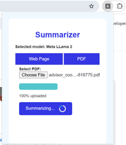

Develop a Browser Extension for RAG Applications with OpenVINO™ Toolkit
1/15/2025
Retrieval Augmented Generation (RAG) is a framework designed to enhance the quality of responses generated by Large Language Models (LLMs) with the help of an external knowledge source. In RAG-based applications, LLMs make use of external knowledge sources such as documents, webpages, etc. to generate content that is grounded on source data.
The article explains the process of leveraging Intel® Distribution of OpenVINO™ toolkit (OpenVINO Toolkit) for creating a RAG based browser extension to efficiently summarize the content from the web URL or any uploaded PDF.
OpenVINO Toolkit
OpenVINO toolkit is a powerful tool designed to optimize, accelerate deep learning inference and deploy it with best-in-class performance on a range of Intel® processors and other hardware platforms. Using OpenVINO toolkit to build RAG-based browser extensions can lead to several advantages like hardware acceleration, model compression and efficient deployment of RAG models across different platforms like Windows and Linux.
Here, we show how to convert Hugging Face (HF) models to OpenVINO Intermediate Representation (IR) format with the help of the OpenVINO toolkit, which would help in offloading LLM onto Intel GPUs for inference.
RAG based Browser Extension
This RAG based browser plugin will leverage both LLM and RAG to enhance the browsing experience by summarizing content from webpages or PDFs. It first retrieves relevant information from the source and then generates a concise summary for the user. The plugin also has interactive question answering, allowing users to ask follow-up questions based on the summarized content. This makes it an efficient tool for quickly understanding complex information, while also providing the flexibility for deeper exploration through a conversational interface.
The following flowchart depicts the working of a RAG based browser extension:
Figure 1. Browser Extension Architecture
- First, users would be given a choice to choose the LLM model which will be loaded on GPU with the help of OpenVINO toolkit.
- Then, users can either provide a URL or upload a PDF for which the summary will be generated.
- After generating summary, the plugin renders a dedicated chatbot interface which will allow users to ask follow-up questions.
Components
RAG-based browser extension delivers accurate and informative outputs based on user-provided data by performing effective data pre-processing, including text chunking, embedding, and storage, using components from LangChain. The key components used in this extension are:
- Optimum for Intel: Optimum Intel API simplifies the process of converting, optimizing, and running inference with LLMs. It facilitates model conversion to the OpenVINO IR format, optimization with the Neural Network Compression Framework (NNCF), and integration with other OpenVINO tools while reducing the model size and achieving faster inference. The OVModelForCausalLM is used to load OpenVINO-optimized models and offload model compilation to Intel GPUs.
- Document Loaders: LangChain supports over 100 document loaders for various document types. This extension uses PyPDFLoader and WebBaseLoader to extract text from PDFs and web pages, respectively.
- Text Splitters: LangChain’s built-in text splitter is used to divide large documents into smaller chunks, optimizing language model performance. This extension employs RecursiveCharacterTextSplitter to split text into manageable segments.
- Text Embedding Models: Text embeddings provide vector representations of text, enabling semantic similarity measurements between different pieces of content. This extension uses HuggingFaceEmbeddings from LangChain with Sentence Transformers to convert text chunks into embeddings, facilitating semantic search.
- Vector Store: Chroma, a vector store from LangChain, is used to store and manage text embeddings. This specialized database enables efficient retrieval of high-dimensional vectors for related information.
- Retrievers: During the querying process, user's input is embedded into a vector and the system retrieves the most relevant vectors based on similarity. LangChain's retrievers, including semantic search, help efficiently find the most pertinent information.
- Chain: RetrievalQA chain is employed to retrieve relevant documents from the retriever and generate responses based on the retrieved content, facilitating interactive question-answering.
Figure 2. Workflow of a RAG based browser application
Code Sample Implementation
This code sample shows how to create a browser extension by seamlessly integrating Flask and leveraging OpenVINO backend for fast and efficient summarization of webpages (via URL) and PDFs (via upload).
Before implementing the code sample, we need to setup the environment:
- Installing necessary tools, i.e. Git & Miniforge.
- Clone the code sample repository -
git clone https://github.com/intel/AI-PC_Notebooks.git
cd AI-PC_Notebooks/Text-Summarizer-Browser-Plugin
- Creating a conda environment & installing necessary packages as follows -
conda create -n summarizer_plugin python=3.11 libuv
conda activate summarizer_plugin
pip install -r requirements.txt
I. Download and convert the HF Model to OpenVINO IR format
Login into the HF hub and generate a token. To access the private or gated models, follow the process described in this link. Download and convert the models (llama-2-7b and qwen2-7b) into OpenVINO IR format using the following optimum-cli command.
optimum-cli export openvino --model meta-llama/Llama-2-7b-chat-hf --weight-format int4 ov_llama_2
optimum-cli export openvino --model Qwen/Qwen2-7B-Instruct --weight-format int4 ov_qwen7b
Note: Raise access request for Llama models as it is a gated repository.
II. Loading the chrome extension
To load custom extension in developer mode, refer Chrome’s development documentation.
III. Run the sample
1. In the terminal (command prompt if using Windows), navigate to the backend folder & start the flask server by running - python server.py
2. Activate & pin the loaded extension as follows.

3. Choose the model from the dropdown.
4. Next, choose either Web Page or PDF
5. Web Summarizer:
-
- Enter the URL of the webpage to summarize.
- Click the "Summarize" button.
- After summarization, the text appears, and users can ask follow-up questions.
6. PDF Summarizer:
-
- Upload a PDF file.
- Click "Upload & Summarize."
- After summarization, the text appears, and users can ask additional questions.

7. Refresh the webpage or re-open the plugin to restart.
What’s Next
Leverage Intel’s AI PCs to foster innovation and accelerate the creation of generative AI applications through iterative experimentation.
Browser extension harnesses the capabilities of LLMs and vector databases to deliver enhanced user experiences. By seamlessly integrating with web content and providing real-time responses, it empowers users to access information, generate creative content, and streamline their workflows. Also, explore the GenAI playground GitHub repository that contains different example notebooks which shows how to develop end-to-end GenAI applications on AI PCs.
We encourage you to also check out and incorporate Intel’s other AI/ML Framework optimizations and tools into your AI workflow and learn about the unified, open, standards-based oneAPI programming model that forms the foundation of Intel’s AI Software Portfolio to help you prepare, build, deploy, and scale your AI solutions.
References
- Tutorial - Text summarization using LangChain
- Medium Article - A Brief Introduction to Retrieval Augmented Generation (RAG)
- Medium Article - Prompt Engineering: Retrieval Augmented Generation(RAG)
- LangChain - Retrieval Documentation
Additional Resources
Product and Performance Information